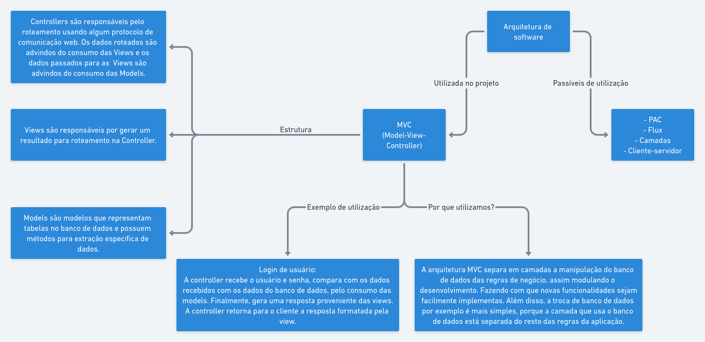
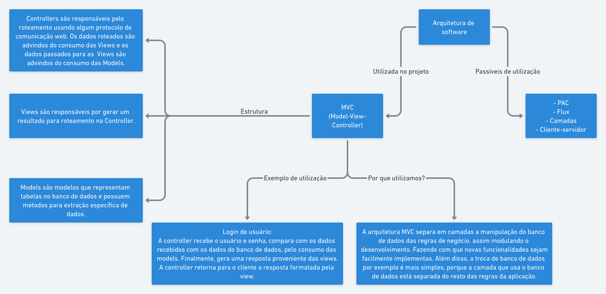
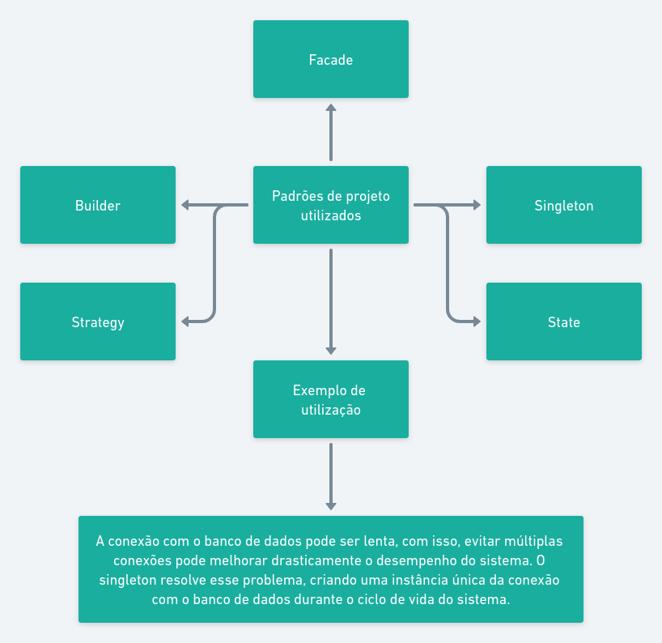

Arquitetura de software
Arquitetura utilizada
No projeto foi utilizado a arquitetura MVC, que consiste em separar as lógicas da aplicação da manipulação de dados dos bancos de dados e das formatações retornadas pelo servidor. Ela separa as camadas em três principais camadas: models, views e controllers.
Controllers
Contém as lógicas de roteamento de respostas ao cliente, utilizando a camada de models e views para criar a reposta adequeada à requesição.
Models
Contém modelos que manipulam os bancos de dados e possuem métodos para extração específica de dados.
Views
Contém shemas para formatação de dados em formatos que serão retornados ao cliente.
 

Padrões de projeto utilizados
No projeto foi escolhido 5 padrões de projeto para melhorar o entendimento do código feito, entre eles, devemos ressaltar o uso do Singleton, que permite criação de uma classe que gera a mesma instância sempre, o que pode melhorar a perfomance do sistema ao usar conexões com banco de dados.
Diagrama UML de Classes


Protótipo